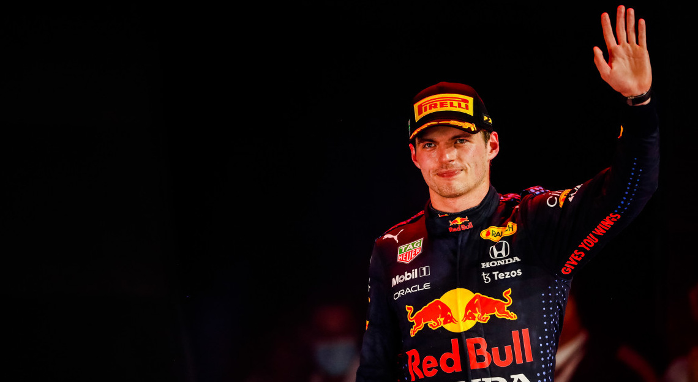
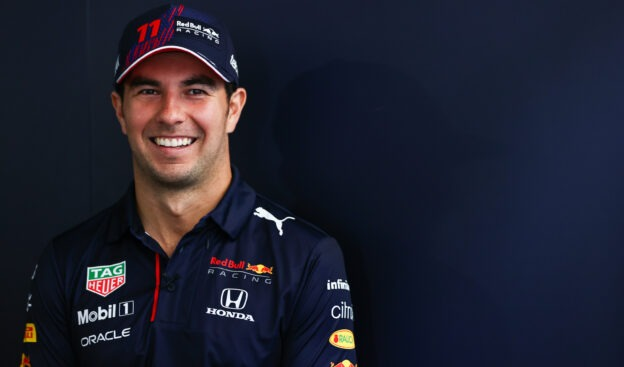

Red Bull

Réputé pour ses boissons énergisantes et ses investissements dans les sports extrêmes, le team Oracle Red Bull Racing débute en Formule 1 en 2005. En quelques années, l’équipe se construit et remporte entre 2010 et 2013 quatre titres de champion du monde des constructeurs et des pilotes avec Sebastian Vettel. Le team n’a de cesse de se développer jusqu’à pouvoir rivaliser avec les plus grands, malgré sa jeunesse en terme d’expérience comparé à Mercedes ou Ferrari.
Le fondateur et propriétaire de la Oracle Red Bull Racing Team est Dieter Mateschitz, leurs siège se situe à Milton Keynes, en Angleterre.
Les pilotes de la saison 2022 :
Max Verstappen

Brillant en karting, avec plusieurs titres européens et mondiaux en 2012 et 2013, Max Verstappen arrive, à 16 ans, en Championnat d'Europe de F3, dans l'écurie néerlandaise Van Amersfoort, la même qui a fait débuter son père Jos en 1991.
Ces résultats suffisent à attirer l'attention de Red Bull, qui place le pilote dans son Junior Team.
Du haut de ses 17 ans, Max Verstappen devient le 15 mars 2015 le plus jeune pilote de l'histoire à prendre le départ d'un Grand Prix.
Dès sa première course au sein de Red Bull Racing, Max Verstappen s'impose, à Barcelone. Et devient à 18 ans le plus jeune pilote à mener une course, à monter sur un podium et à gagner un Grand Prix. C’est un pilote très talentueux qui ne cesse de nous impressionner au fil des années.
Sergio Perez

Sergio Perez est le cinquième pilote mexicain à rouler sur des circuits de Formule 1.
C’est grâce à l’appui et le soutien financier de l’entreprise mexicaine Telmex et de son propriétaire Carlos Slim qu’il va gravir petit à petit les échelons et arriver en Formule 1.
Après avoir démarré aux Etats-Unis, il arrive en Europe en 2005 où il va concourir dans des championnats nationaux puis en GP2. Ce n’est qu’en 2011 qu’il arrive en Formule 1.
Après deux ans à Sauber, il fait un court passage chez McLaren avant de s’installer, à partir de 2014, chez Force India. Son arrivée à Force India va le faire intégrer définitivement dans le top 10 du paddock. Jusqu’à devenir, depuis 2021, un exemple pour Max Verstappen à Red Bull.